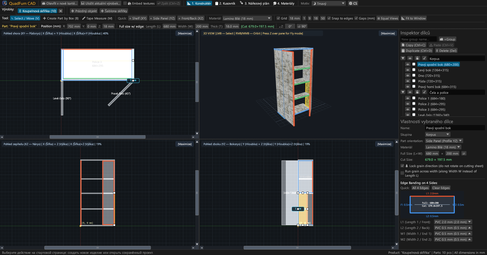
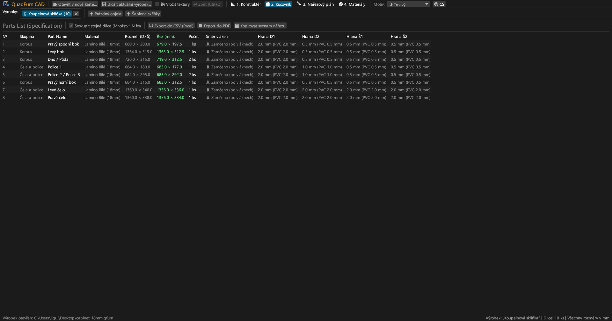
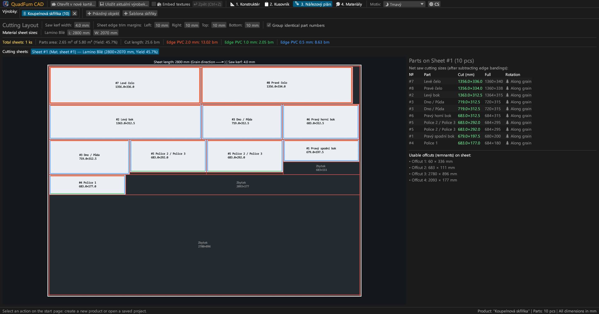
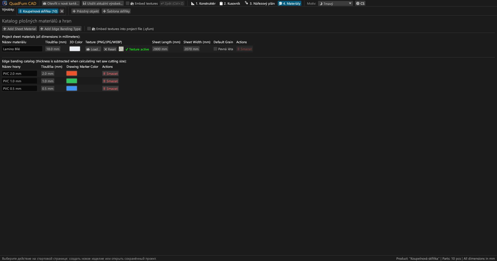
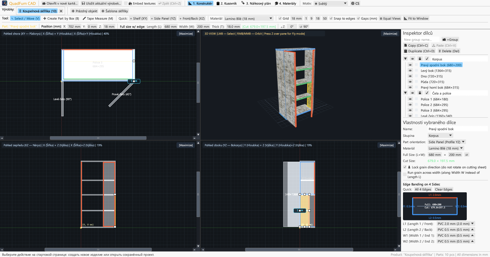
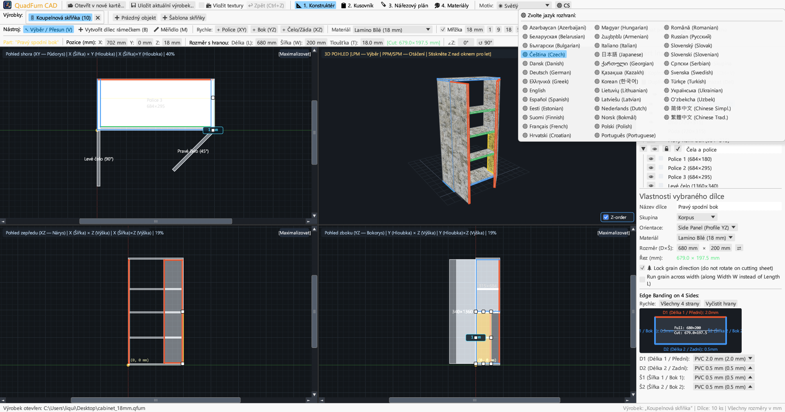

Rychlý desktopový CAD pro truhláře. 4pohledové synchronní modelování, zadávání rozměrů s kalkulačkou, odpočet tloušťky hran a optimalizace řezání.

Spojuje 4pohledové kreslení, přesné číselné zadávání a gilotinový nářezový plán v jediné aplikaci.
Současná práce v půdorysu (XY), nárysu (XZ), bokorysu (YZ) a 3D s posuvníky, magnetickým přichytáváním a kótami mezer.
Zadávání souřadnic (X, Y, Z), rozměrů (L × W × T) a úhlu s kalkulačkou přímo v polích (např. 600-4 nebo (800-36)/2).
Přiřazení ABS/PVC hran (0,4–2,0 mm) ke 4 stranám pro výpočet přesných čistých řezných rozměrů pro formátovací pilu.
Algoritmus respektující směr letokruhů dřeva, prořez pily (4,0 mm), formátovací ořez a evidenci využitelných zbytků desek.
Práce na více kusech nábytku současně v záložkách. Kopírování a vkládání dílců s přenosem materiálů.
Export na šířku A4: kusovník, 4pohledové výkresy, nářezové plány a souhrn materiálů s rezervou +15 %.





Samostatné spustitelné soubory bez externích závislostí.
Přenosná verze s ikonou, bez nutnosti instalace.
sudo apt install ./quadfurn_0.2.2_amd64.deb
Univerzální balíček pro Apple Silicon (M1–M4) a Intel x86_64.
| Klávesa | Činnost | Oblast |
|---|---|---|
| V | Nástroj Výběr / Posun (8 táhel, výběr obdélníkem) | 2D pohledy |
| B | Vytvořit dílec rámečkem v aktivní rovině | 2D pohledy |
| M | Měřidlo (přesné měření vzdáleností v milimetrech) | 2D pohledy |
| Z | Volný let z pohledu první osoby (Noclip s WASD) | 3D okno |
| ← → ↑ ↓ | Posun o krok mřížky (Shift pro dvojitý krok) | 2D pohledy |
| Ctrl + C / V | Kopírovat / vložit dílce (mezi záložkami) | Všechny záložky |
| Ctrl + D | Duplikovat vybrané dílce s posunem | Aktivní projekt |
| Ctrl + S | Uložit projekt do souboru .qfurn / .json | Aktivní projekt |
| Ctrl + Z | Vrátit zpět (až 40 kroků historie) | Aktivní projekt |
| Delete / Backspace | Smazat vybrané dílce | Aktivní projekt |